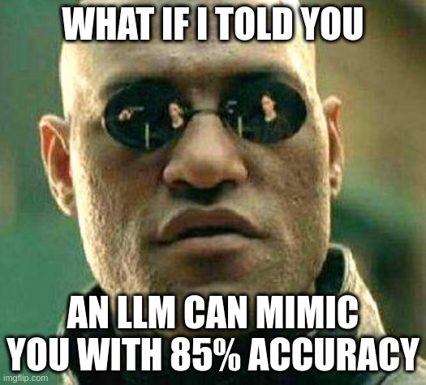
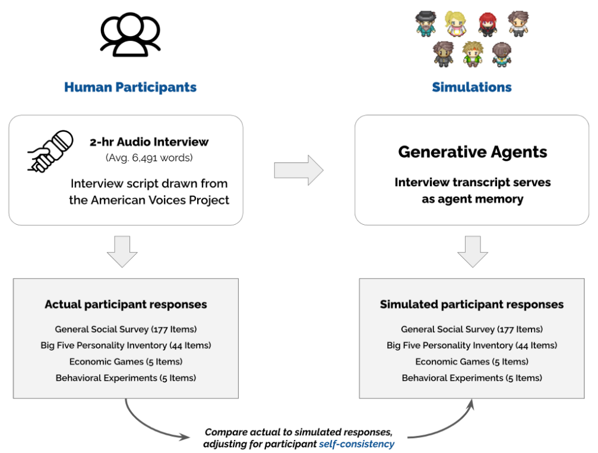
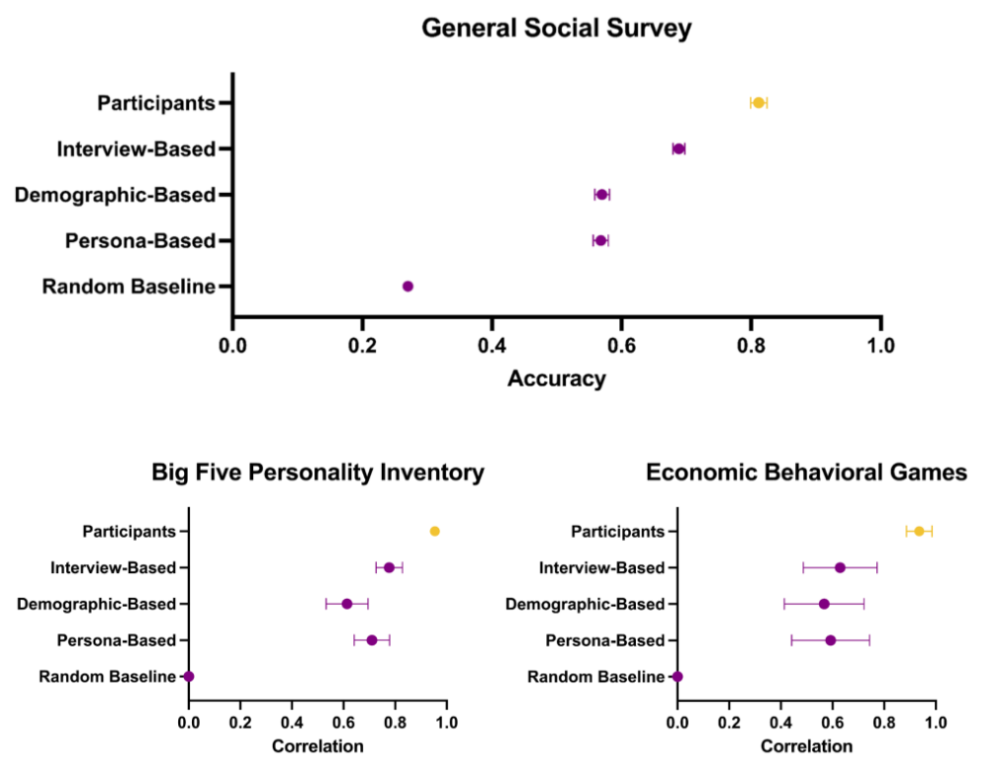
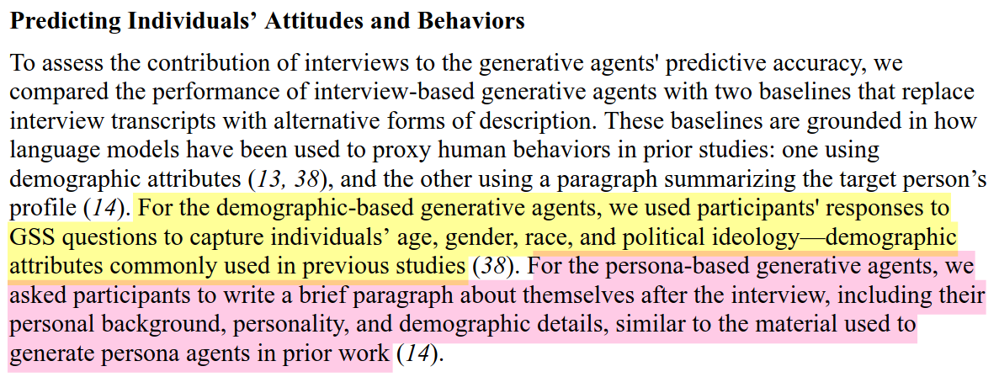
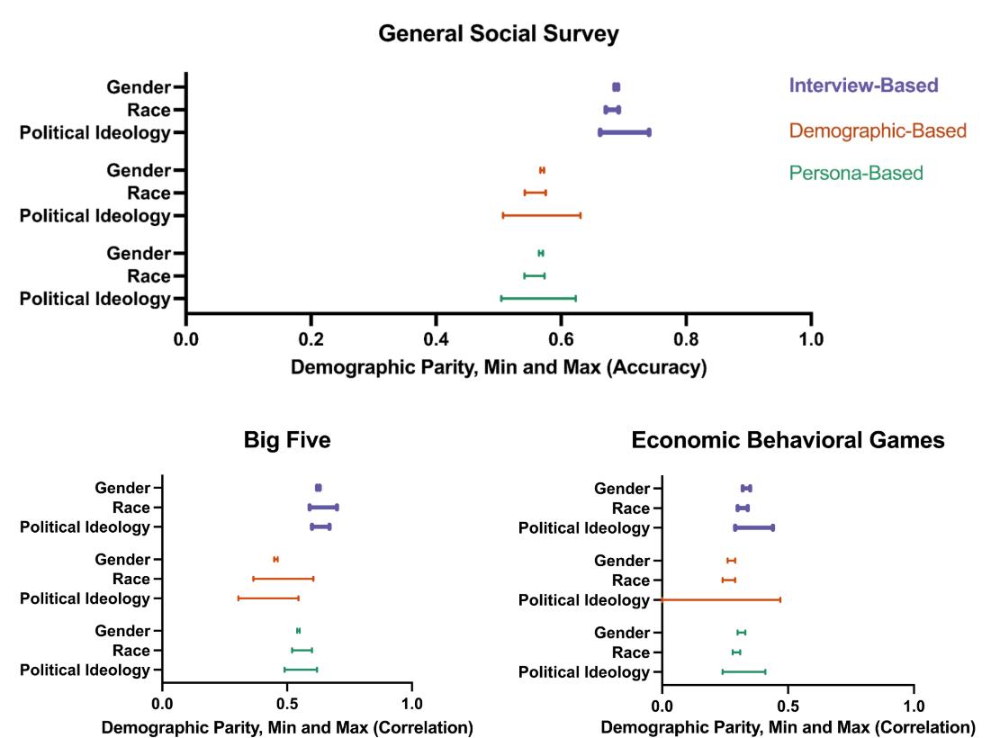
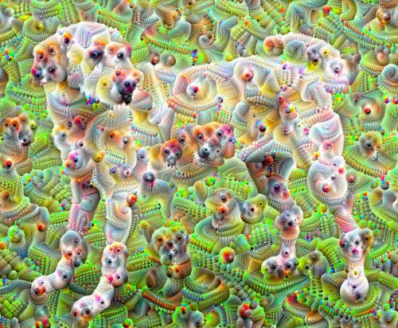
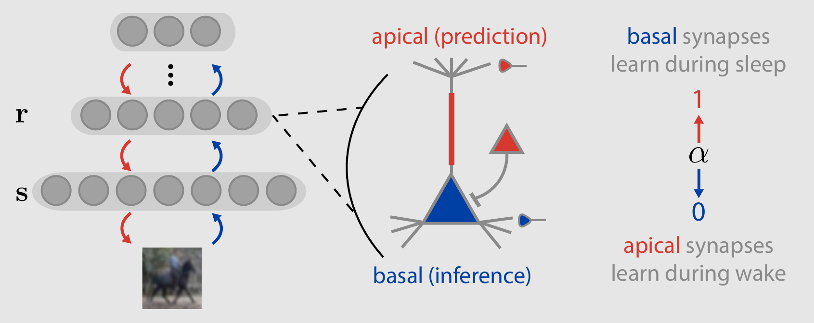

LLM Paper Discussion
A bit about this presentation
We will be covering two papers, Generative Agent Simulations of 1000 People and the oneirogen hypothesis, with a focus on providing a high-level overview.
A bit about me
Generative Agent Simulations

Methodology
- 1052 people of different age, gender, race, ideology
- Test to see how well can agent replicas mimic them
Overview

Results

Key Findings!
85% accuracy, Reduces biases and outperforms traditional demographic-based models!
Different approaches

Results, compared

Implications
Economic simulations
More accurate behavioral predictions are better!
More personalized AI generated content
Ex. Generated e-mails and letters will sound a lot more personal.
Possible Research Vector
Take the open-source data and test it against problems the individual is skilled at, and compare the performance to a baseline
The Oneirogen Hypothesis

Key Idea
- Psychedelics are primarily 5-HT2a serotonin receptor agonists
- Wake-Sleep Algorithm that aims to simulate the effects of psychedelics
What are Psychedelics?
Wake-Sleep Mechanism
The Oneirogen Hypothesis
"The perceptual effects of classical psychedelics are a result of their pharmacological actions inducing neural activity states that truly are more similar to dream-like states"
The Method

Desirable Effects Achieved
Shift enhances replay-dependent learning mechanisms during sleep
Replay-dependent learning
Replay-dependent learning involves the reactivation of neural patterns associated with past experiences during sleep, facilitating the strengthening of synaptic connections and memory consolidation
Other Observations
The model captures effects seen in humans:
- Emergence of closed-eye hallucinations
- Increased stimulus-conditioned variabilitiy
- Significant increase in synaptic plasticity
Implications